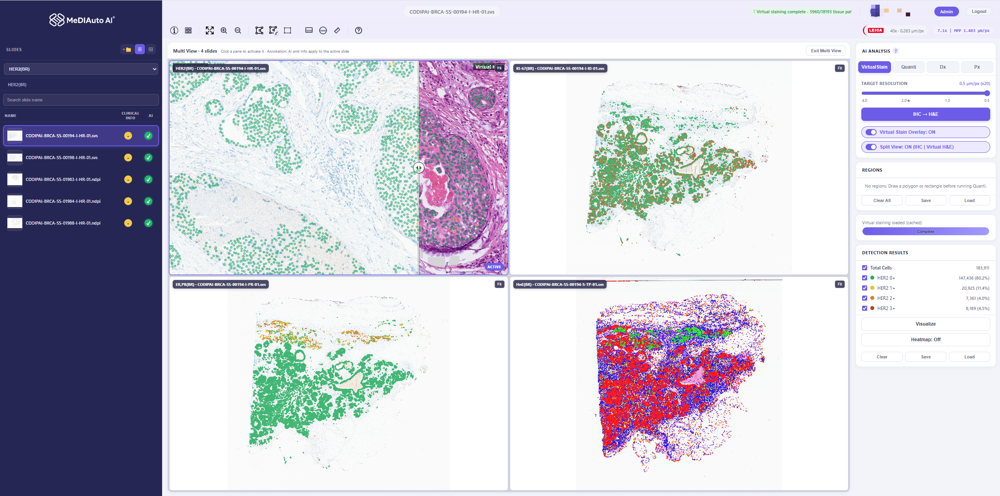
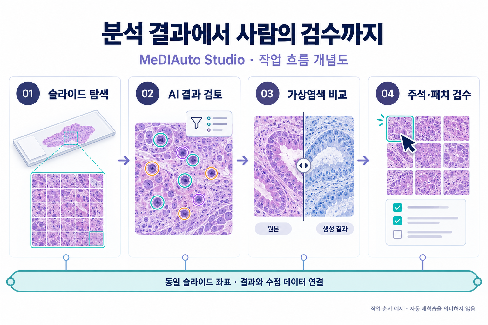
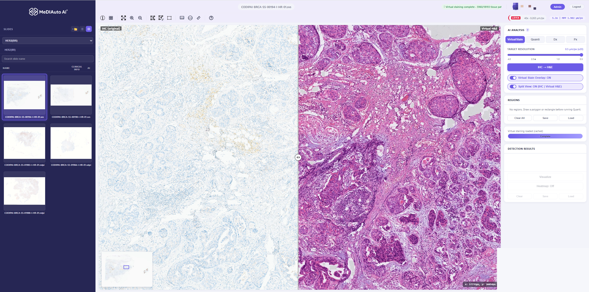
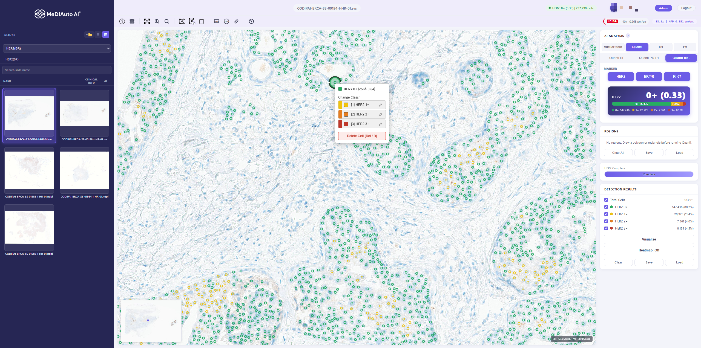
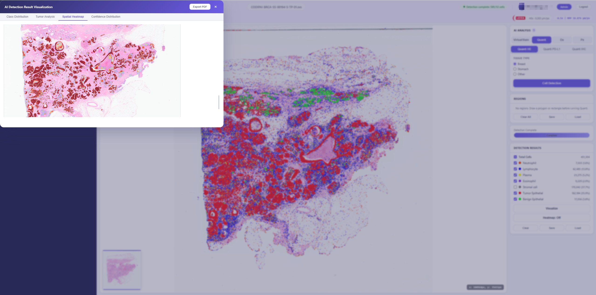
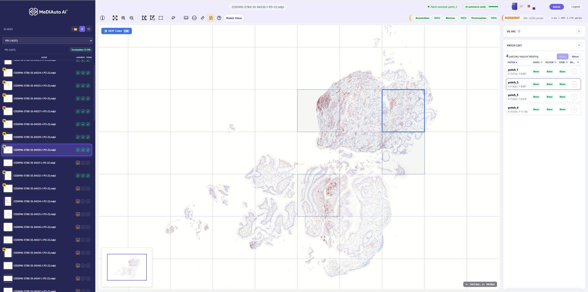
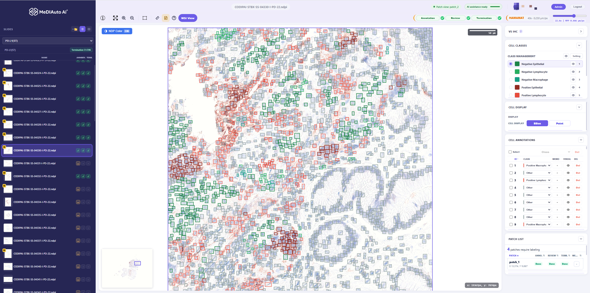

MeDIAuto 비주얼 브리프VISUAL BRIEF / 2026.09.14 / v2.0분석 결과를, 사람이 검토하는 작업으로
MeDIAuto Studio | 특허 기술 후보와 실제 화면으로 보는 플랫폼 차별성

실제 화면 S1 · 저장소의 기존 비식별 스크린샷. 화면 명칭·모델 표시는 촬영 당시 기준이며 현재 UI와 다를 수 있습니다.
핵심 제안 · 정량 AI → 가상염색 비교 → 주석·검수로 이어지는 구체적인 작업 경험01 / PLATFORM WORKFLOW차별성은 기능 사이의 연결에서 드러납니다
원본을 열고, 결과를 살피고, 필요한 작업을 사람이 검수하는 흐름

생성 인포그래픽 G1 · 코드와 특허 초안을 설명하는 개념도. 실제 제품 화면이나 성능 측정 자료가 아닙니다.
제품 포지션 · 기관별 병리 AI 검토·라벨링 업무를 연결하는 웹 기반 작업 플랫폼02 / VIRTUAL STAIN / 특허 기술 후보 ③가상염색 결과를 원본 위치에서 비교합니다
생성 결과를 별도 파일로만 보관하지 않고, 정렬된 비교 화면으로 전달

실제 화면 S2 · 화면 예시는 IHC → Virtual H&E. 변환 방향을 반대로 해석하지 않습니다. 실제 검사 대체·진단 성능의 근거가 아닙니다.
차별화 제안 · 가상염색 생성과 탐색·비교를 하나의 작업 흐름으로 제공03 / QUANTITATIVE AI / 특허 기술 후보 ②·④숫자의 근거가 된 세포를 직접 확인하고 수정합니다
원본 영상 위에서 세포별 분류와 신뢰도를 확인하는 검토 화면

실제 화면 S3 · 스크린샷의 HER2 점수·세포 수는 예시 결과이며 정확도 검증 자료가 아닙니다. 타사에도 AI 결과 수정 기능이 있습니다.
차별화 제안 · 결과 요약에서 세포 단위 근거 확인과 사람의 수정으로 연결04 / SPATIAL CONTEXT / 특허 기술 후보 ②세포의 개수와 공간 분포를 함께 살펴봅니다
세포 단위 표시와 공간 요약을 목적에 맞게 전환하는 검토 경험

실제 화면 S4 · 공간 격자·표현 전환의 구현 근거는 tile-viewer.js. 정지 화면만으로 처리 속도나 수백만 결과의 실시간 성능을 증명하지 않습니다.
차별화 제안 · 많은 결과를 표시하는 것에서, 검토 대상을 찾고 좁히는 경험으로 연결05 / PATCH WORKFLOW / 특허 기술 후보 ④슬라이드의 필요한 영역을 검수 가능한 작업으로 나눕니다
필요 영역과 패치 목록, 주석·검수·종결 상태의 연결

실제 화면 S5 · 표시된 완료율은 촬영 당시 작업 상태의 예시입니다. 업무 효율 향상률이나 자동 검수 정확도를 의미하지 않습니다.
차별화 제안 · 주석을 그리는 기능에 작업 단위와 검수 상태를 결합06 / CELL ANNOTATION / 특허 기술 후보 ④AI 보조 결과를 사람이 편집할 수 있는 주석으로 다룹니다
패치 내 세포, 클래스 목록, 작업 상태를 한 화면에서 확인

실제 화면 S6 · 현재 확인 범위는 주석·수정·상태 관리입니다. 수정 데이터의 자동 재학습·모델 배포는 구현 완료로 설명하지 않습니다.
차별화 제안 · AI 보조 → 사람의 수정 → 패치 검수 상태로 연결되는 업무 구성07 / RESPONSIVE VIEWING / 특허 기술 후보 ①화면 뒤에서는 현재 요청을 먼저 처리하도록 조정합니다
스크린샷에 드러나지 않는 차별화 요소: 화면 요청과 서버 생성 우선순위의 연결
생성 인포그래픽 G2 · 흐름을 단순화한 개념도. 즉시 생성 경로에서도 우선 요청을 등록합니다. 타사 대비 속도·사용자별 공정성 보장을 뜻하지 않습니다.
검증할 효과 · 첫 유효 화면 시간 / 이동 후 목표 해상도 시간 / AI 병행 시 p95 응답시간08 / COMPETITIVE POSITION경쟁사와 겹치는 기능 위에, 우리 작업 흐름을 제시합니다
HALO 계열
공식 확인 · AI 학습·정량 분석·공동 데이터 작업
우리 제안 · 가상염색 비교와 패치 검수를 연결하는 실제 작업으로 설명H1 H2
Aiforia Create
공식 확인 · 클라우드 모델 개발·검증·AI 보조 주석
우리 제안 · 기관 서버 중심 운영과 구체적인 검수 절차를 제시A1
Visiopharm
공식 확인 · 예제 기반 AI 학습·조직/세포 표현형 분석
우리 제안 · 브라우저에서 결과 비교와 주석 작업을 연결하는 흐름을 제시V1 V2
Proscia Concentriq LS
공식 확인 · 이미지·연관 데이터 관리·AI 실행 연결
우리 제안 · 사용자 수정 저장과 패치 상태 관리를 구체적으로 시연P1 P2
PathPresenter
공식 확인 · 기업용 이미지 관리·협업·외부 시스템 연동
우리 제안 · 자체 분석 파이프라인과 세포·패치 검수의 연결을 제시R1
QuPath
공식 확인 · 설치형 공개 소스 분석·주석·스크립트
우리 제안 · 계정·서버 작업·패치 검수를 포함한 웹 업무 제공 범위를 설명Q1 Q2
공식 공개 자료 비교이며 타사 기능 부재·임상 성능 우위를 주장하지 않습니다.